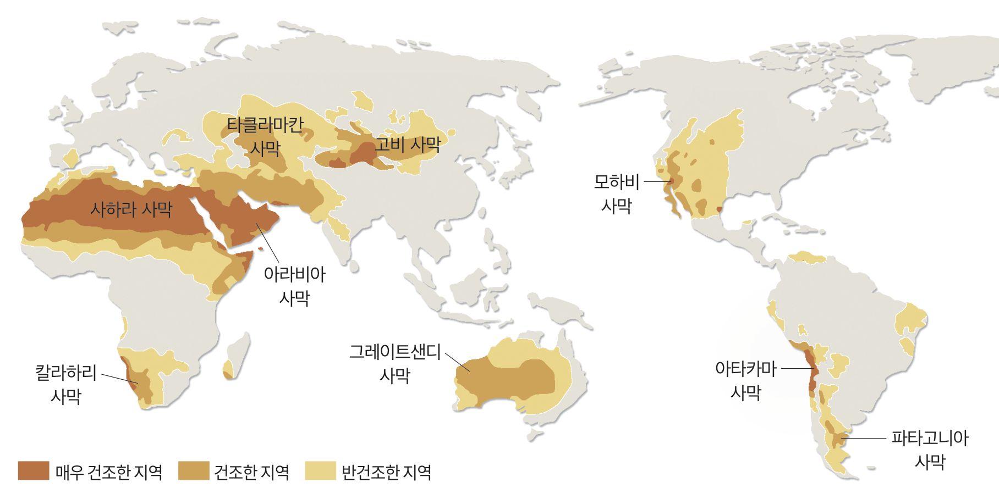
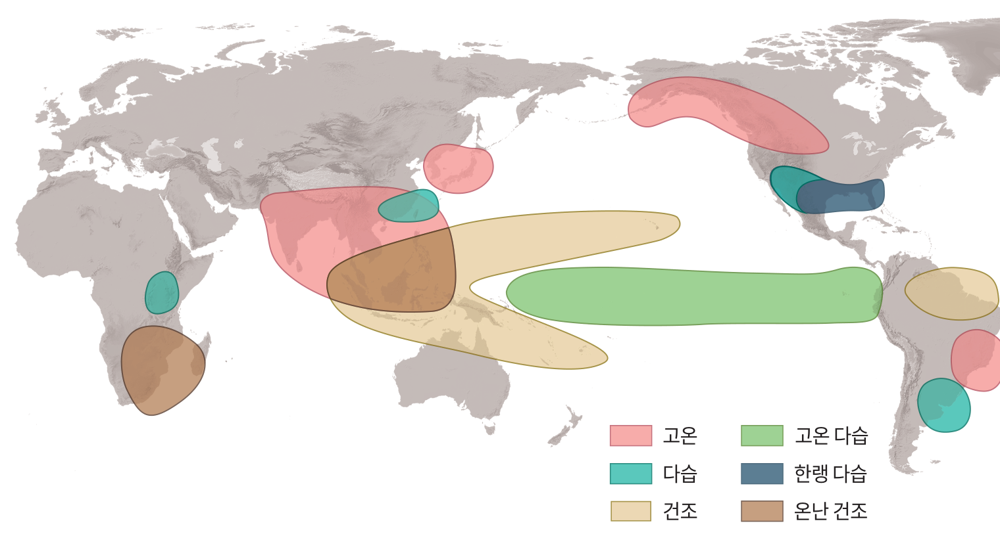

모식 그림 · 색은 이 수업 끝까지 같은 개념의 색 · 그래프: 교과서 83쪽(기상청 종합 기후변화감시정보)
1온실 효과
아랄해의 변화
아랄해의 면적
100%이하
한때→현재
한때 세계에서 네 번째로 큰 호수였던 아랄해는 현재 면적이 10 % 이하로 감소해 대부분이 사막으로 변했다.
이러한 환경 변화는 인간 생활에 어떤 영향을 미쳤을까?
예시 답안지구 온난화가 진행되면서 해수면 상승, 가뭄, 홍수와 같은 기상 이변이 발생하면 거주지의 면적이 줄어들거나 전염병이 발생하는 등 인간 생활에 영향을 미칠 수 있다.
모식 그림 · 실제 호수 모양과 다름 · 면적: 교과서 82쪽
1온실 효과중학교 과학 복습
복사 평형
복사 평형지구는 에너지를 1흡수한 만큼 에너지를 2방출하는 평형 상태에 있다.
지구의 연평균 기온이 3일정하게 유지된다.
모식 그림 · 지구와 물결의 크기는 실제와 다름 · 에너지양 100: 지도서(반사는 고려하지 않음)
1온실 효과
온실 기체
↑ 우주 쪽
↓ 지표 쪽
온실 기체
태양 복사 에너지주로 가시광선
지구 복사 에너지주로 적외선
온실 기체온실 효과를 일으키는 기체
태양에서 오는 에너지를 대부분 1통과시키지만 지구가 방출하는 에너지는 대부분 2흡수한다.
종류수증기, 이산화 탄소, 메테인, 오존 등
3수증기에 의한 온실 효과가 가장 크다.
수증기
이산화 탄소
메테인
오존
모식 그림 · 분자의 크기·모양과 물결의 크기는 실제와 다름
1온실 효과
온실 효과
지구에 대기가 없을 때
지구에 대기가 있을 때
지구에 대기가 없다면 지표에서 방출하는 지구 복사 에너지가 그대로 1우주 공간으로 빠져나간다.
대기가 있을 때는 지표에서 방출하는 에너지를 대기 중의 온실 기체가 2흡수했다가 지표로 3다시 방출하기 때문에 지구의 평균 기온은 대기가 없을 때보다 4높게 유지된다.
이를 5온실 효과라고 한다.
모식 그림 · 대기 두께와 분자·물결의 크기는 실제와 다름 · 평균 지표 온도 값: 참고서(교과서 밖)
1온실 효과
직접 해 보기 — 온실 기체의 양과 지표의 온도
없음많음지금 ▾
지표의 평균 온도약 15 ℃
모식 그림 · 대기를 한 층으로 본 간단한 모형으로 계산 · 띠의 굵기 = 에너지양 · 대기 두께는 실제보다 두껍게
2지구 온난화
해 보기 — 지구 온난화의 메커니즘 알아보기
연도1950
이산화 탄소 농도–ppm
기온 편차–℃
1.최근의 지구 평균 기온은 1950년의 평균 기온에 비해 얼마나 변했는지 써 보자.
예시 답안2023년의 평균 기온은 1950년의 평균 기온에 비해 약 1.17 ℃ 상승했다.
2.지구 평균 기온 변화와 대기 중 이산화 탄소 농도 변화에는 어떤 관계가 있는지 설명해 보자.
예시 답안대기 중 이산화 탄소 농도가 상승하면서 지구 평균 기온도 상승하고 있다.
교과서 83쪽 해 보기 · 출처: 기상청 종합 기후변화감시정보
2지구 온난화
지구 온난화
온실 기체의 배출량(2023년)
산업 혁명 이후 급격히 늘어난 화석 연료의 사용량, 토지 개발, 무분별한 벌목 등 인간의 활동으로 인해 이산화 탄소를 비롯한 많은 양의 온실 기체가 대기로 배출되었다.
대기 중 온실 기체증가1
→온실 효과강화2
→지표와 대기가 흡수하는 에너지양증가3
→지구의 기온상승4
지구 온난화지구의 평균 기온이 상승하는 현상
태양 복사 에너지지구 복사 에너지온실 기체
모식 그림(분자·화살표는 실제보다 크게) · 배출량: 교과서 밖(참고서)
2지구 온난화
스스로 확인하기
➊
지구의 평균 기온은 대기가 없을 때보다 대기가 있을 때 ( 높게, 낮게 ) 유지된다.
➋
지구의 평균 기온이 상승하는 현상을 ( 지구 온난화 )(이)라고 한다.
추가 정리 문제
1
화석 연료 사용량이 증가하면 대기 중 온실 기체의 양이 ( 증가, 감소 )한다.
2
다음 중 주요 온실 기체가 아닌 것은?
① 수증기② 이산화 탄소③ 오존④ 질소⑤ 메테인
교과서 83쪽 스스로 확인하기 · 추가 정리 문제: 교과서(교사용)
2지구 온난화
지구 열수지
열수지지구가 흡수하고 방출하는 에너지양의 관계
열수지 평형평형 상태일 때 지구가 흡수하는 태양 복사 에너지양과 지구가 방출하는 지구 복사 에너지양은 같다.
흡수100 − 30 = 70
방출12 + 58 = 70
태양 복사 = 100일 때의 값(교과서 84쪽, 출처: 『대기과학』, 2016.) · 띠의 굵기 = 에너지양 · 띠의 모양은 흐름을 나눠 보인 것(빛의 실제 경로 아님)
2지구 온난화
탐구 — 유입되는 에너지양과 유출되는 에너지양
구분
유입되는 에너지양
유출되는 에너지양
지표
1441
= 태양 복사 에너지(50) + 대기의 재복사(94)
=
1442
= 대기로 방출(132) + 우주로 방출(12)
대기
1523
= 대기와 구름 흡수(20) + 지구 복사 흡수(132)
=
1524
= 지표로 재복사(94) + 우주로 방출(58)
우주
1005
= 반사(30) + 지표면 방출(12) + 대기와 구름의 방출(58)
=
1006
= 태양 복사(100)
교과서 84쪽 탐구(출처: 『대기과학』, 2016.) · 태양 복사 = 100일 때의 값 · 띠의 굵기 = 에너지양 · 띠의 모양은 흐름을 나눠 보인 것
2지구 온난화
직접 해 보기 — 이산화 탄소 농도와 지구 열수지
지표 온도지금
모식 그림 · 늘어난 양(띠의 밝은 부분)은 실제보다 크게 그림 · 태양 복사 = 100일 때의 값(교과서 84쪽)
2지구 온난화
탐구 — 지구 온난화로 인한 지구 열수지 변동
대기 중 이산화 탄소 농도 증가
→
대기가 흡수하는 에너지양이 132보다1( 증가, 감소 )
→
대기가 지표로 방출하는 에너지양이 94보다2( 증가, 감소 )
→
지표가 다시 흡수하는 에너지양이 94보다3( 증가, 감소 )
→
지표 온도4( 상승, 하강 )
정리지구 온난화가 일어나는 과정을 지구 열수지 변동과 관련지어 설명해 보자.
대기 중 온실 기체가 증가하면 대기가 흡수하는 지구 복사 에너지양은 132보다 증가할 것이다. 흡수한 에너지는 그대로 재방출되므로 대기가 우주로 방출하는 58과 지표로 방출하는 94도 각각 증가할 것이다. 그러므로 지표가 흡수하는 에너지양이 기존값 144보다 많아지므로 지표 온도는 상승할 것이다. 마찬가지로 대기가 흡수하는 에너지양도 많아지므로 대기의 온도도 상승한다.
교과서 84쪽 탐구 · 그림에서 늘어난 양(띠의 밝은 부분)은 실제보다 크게 그림
2지구 온난화
탐구 — 지구의 변화에 따른 열수지 변동
지구 온난화에 따른 지구의 변화
영구 동토층영구 동토층이 녹아 그 안에 매장되어 있던 메테인이 방출된다.↑
툰드라 지대툰드라 지대가 초원 지대로 변화한다.↓
바다바다의 증발량이 증가하여 대기 중의 수증기량이 증가한다.↑
구름낮은 고도에 위치한 구름이 감소한다.(구름의 평균 고도가 높아진다.)↑
빙하극지방의 빙하가 녹아 빙하의 양이 감소한다.↑
이에 따라 지구 열수지가 어떻게 변동될지 추론해 보자.
메테인은 온실 기체이므로 대기가 흡수하는 에너지양이 증가할 것이다.
↑지구의 기온이 상승한다.
광합성량이 증가해 대기 중 이산화 탄소 농도가 감소할 것이다. 그러므로 대기가 흡수하는 에너지양이 적어질 것이다.
↓지구의 기온이 하강한다.
증발량이 증가하면 대기 중 수증기량이 늘어 대기가 흡수하는 에너지양이 증가할 것이다.
↑지구의 기온이 상승한다.
높은 구름은 낮은 구름보다 반사율이 대체로 작다. 그러므로 높은 구름이 증가하면 반사율이 낮아져 대기와 지표가 흡수하는 에너지양은 증가할 것이다.
↑지구의 기온이 상승한다.
빙하가 감소하면 반사율이 감소해 지표와 대기가 흡수하는 에너지양이 증가할 것이다.
↑지구의 기온이 상승한다.
교과서 밖(지도서 163쪽 탐구 ‘지구의 변화에 따른 열수지 변동’) · 모식 그림
3사막화
사막은 어디에 있을까?
지구에서 사막이 분포하는 지역은 대체로 위도130° 부근이다.
왜 이 위도에 사막이 많을까?
사막 이름: 교과서 그림 II-12 · 모래색 표시는 대략적인 위치(모식)
3사막화
대기 대순환
대기 대순환위도에 따른 1에너지 불균형과 2지구 자전에 의해 생기는 지구 전체 규모의 순환
위도 30° 부근하강 기류가 형성되어 3맑고 건조한 날씨가 지속된다. → 4사막이 많이 분포한다.
모식 그림 · 순환의 높이는 실제보다 크게 · 남반구도 대칭
3사막화
사막화
사막화사막 주변 지역의 토지가 1황폐해지면서 점차 2사막으로 변하는 현상
원인3가뭄 등 자연적인 원인 가축의 4과잉 방목, 과도한 5경작, 무분별한 6삼림 벌채 같은 인위적인 원인
영향생태계에 큰 변화, 식량 생산 감소, 7황사가 심해짐
노력유엔(UN) 사막화 방지 협약
모식 그림 · 원인을 한 화면에 모아 보임(변화의 빠르기는 실제와 다름)
3사막화
사막과 사막화 지역

사막화가 되고 있는 지역건조한 지역과 반건조한 지역 대개 사막의 1가장자리에서 일어난다.
사헬사하라 사막의 남쪽 지역 사막화 현상이 심각하다.
고비 사막고비 사막의 확대는 우리나라 2황사 현상을 심화시킨다.
그림: 교과서 85쪽 그림 II-12 · 아래 그림은 모식(참고서)
3사막화
가장 건조한 사막 — 칠레 아타카마 사막
아타카마 사막
평균 강수량이 연간 3 mm를 넘지 않는다.
1남태평양 동쪽의 반영구적인 고기압 → 연중 하강 기류가 우세하다.
2페루 해류(한류)에 의해 하층 대기가 냉각 → 공기가 매우 안정해져 상승 운동이 억제된다.
3안데스산맥이 가로막아 동쪽의 습한 공기가 유입되지 못한다.
사막은 하강 기류 이외에도 해류와 지형의 영향을 받아 형성된다.
사막: 연평균 강수량이 250 mm 이하인 건조한 지역 — 고온인 지역에서만 형성되는 것은 아니다.
교과서 밖(지도서 참고 자료) · 모식 그림: 산맥·대기의 높이와 폭은 실제 비율과 다름
4엘니뇨
엘니뇨(El Niño)라는 이름
12월
25
크리스마스 무렵, 바닷물은 왜 따뜻해졌을까?
El Niño엘니뇨
스페인어로 남자아이 혹은 아기 예수를 뜻하는 말
흔히 크리스마스를 전후로 하여 동태평양 적도 부근 해역의 수온이 올라가 평소보다 어획량이 줄어들었기 때문에 어부들이 예수가 주는 휴가라고 생각하여 이와 같은 이름이 붙었다.
모식 그림 · 수온과 어획량은 변화의 방향만 나타냄
4엘니뇨
평상시 적도 부근 태평양
서태평양 적도 부근 해역
따뜻해진 해수가 2두껍게 쌓인다.
3상승 기류 → 강수량 많음
무역풍과 표층 해수
무역풍의 영향으로 표층 해수가 1동쪽에서 서쪽으로 흐른다.
무역풍따뜻한 해수찬 해수
동태평양 적도 부근 해역
깊은 곳에서 4차가운 해수가 올라와 해수면 온도가 낮다.
5하강 기류 → 날씨 맑음
모식 그림 · 깊이와 높이는 과장 · 해수면의 높이 차이는 나타내지 않음
4엘니뇨
엘니뇨 발생 시
엘니뇨동태평양 적도 부근 해역의 수온이 평상시보다 4높아지는 현상
서태평양 적도 부근 해역
따뜻한 해수층의 두께가 2얇아진다.
하강 기류 → 강수량 감소 (가뭄 발생)
무역풍과 표층 해수
무역풍이 1약해지면서 서쪽으로 이동하는 해수의 흐름이 약해진다.
동태평양 적도 부근 해역
심층에서 올라오는 차가운 해수의 흐름이 3약해진다.
상승 기류 → 강수량 증가 (홍수 발생)
모식 그림 · 깊이와 높이는 과장 · 해수면의 높이 차이는 나타내지 않음
2년~7년에 한 번씩 불규칙하게 발생 · 보통 9개월~2년 지속
4엘니뇨
직접 해 보기 — 무역풍의 세기
평상시
동태평양 수온평상시
모식 그림 · 깊이와 높이는 과장 · 해수면의 높이 차이는 나타내지 않음 · 수온은 평상시와 비교한 말로만 나타냄
4엘니뇨
평상시와 엘니뇨 발생 시
평상시
엘니뇨 발생 시
구분
평상시
엘니뇨 발생 시
무역풍
동쪽에서 서쪽으로 분다
평상시보다 1약해진다
표층 해수
동쪽에서 서쪽으로 흐른다
서쪽으로 이동하는 흐름이 약해진다
서태평양 적도 부근 해역
상승 기류 → 강수량 많음
2하강 기류 → 강수량 감소(가뭄 발생)
동태평양 적도 부근 해역
용승 · 하강 기류 → 날씨 맑음
용승 3약화 · 수온 4상승 상승 기류 → 강수량 증가(홍수 발생)
모식 그림 · 깊이와 높이는 과장 · 표의 낱말: 교과서 86쪽 그림 II-13
4엘니뇨
엘니뇨가 세계 기후에 미치는 영향

서태평양 적도 부근 해역수온이 낮아져 1하강 기류가 형성되면서 강수량이 감소해 가뭄이나 산불 피해가 발생하기도 한다.
동태평양 적도 부근 해역2상승 기류가 형성되면서 평상시보다 강수량이 증가해 홍수로 인한 피해가 발생하기도 한다.
지구 곳곳엘니뇨는 적도 부근에서 발생하지만 3대기와 해양의 상호작용으로 지구 곳곳에 환경 변화를 일으킨다.
생물 개체의 수와 서식지 변화, 농작물 재배지와 수확량 변화 등을 일으켜 생태계와 우리 생활에 큰 영향을 미친다.
그림: 교과서 87쪽 · 겨울철(12월~2월)에 발생한 엘니뇨의 영향
4엘니뇨
엘니뇨와 지구의 평균 온도
적도 부근 태평양의 따뜻한 해수평상시엘니뇨 발생 시
강한 엘니뇨가 발생한 해는 지구의 온도가 높다.
강한 화산이 폭발한 해는 1년~2년 정도 지구의 온도가 하강한다.
엘니뇨나 화산 폭발의 영향이 끝나고 일정 시간이 지나면 지구의 온도는 다시 상승 추세로 돌아온다.
교과서 밖(지도서 167쪽 참고 자료 ‘지구의 온도 변화’) · 지구 그림은 모식
4엘니뇨
스스로 확인하기
➊
사막화 발생의 인위적인 원인으로는 가축의 과잉 방목, 과도한 경작, 무분별한 삼림 벌채 등이 있다. ( ○, × )
➋
엘니뇨가 발생하면 동태평양 적도 부근 해역은 심층에서 올라오는 차가운 해수의 흐름이 약해져 평상시보다 수온이 ( 높아진다, 낮아진다 ).
추가 정리 문제
1
사막은 위도 30°보다 60° 부근에 많이 분포한다. ( ○, × )
해설사막은 하강 기류가 발생하는 위도 30° 부근에 많이 분포한다.
2
무역풍이 평상시보다 강하게 불면 엘니뇨가 발생한다. ( ○, × )
해설적도 부근에 부는 무역풍이 평상시보다 약해지면 엘니뇨가 발생한다.
교과서 87쪽 스스로 확인하기 · 추가 정리 문제와 해설: 교과서(교사용)
5영향과 대처 방안
환경 변화의 영향
평균 기온 상승↑
인간 중심의 산업 개발과 경제 활동은 기후 변화1를 일으켜 지구 환경에 큰 영향을 미치고 있다.
지구의 평균 기온2이 계속 상승하면서 빙하 감소, 해수면 상승, 태풍 증가, 홍수와 가뭄 지역 변화, 사막화 등 다양한 환경 변화가 나타나고 있다.
이러한 환경 변화는 주요 작물 재배지의 위치가 변화하고, 바다에서 잡히는 어종이 변화하는 등 사회 경제적3으로도 큰 영향을 미친다.
이런 변화에 대해 우리는 어떻게 대처해야 할까?
모식 그림 · 작물 예: 지도서 169쪽 · 글: 교과서 88쪽
5영향과 대처 방안
기후 변화 완화와 적응을 위한 노력
기후 변화를 완화1하기 위한 노력
기후 변화에 적응2하기 위한 노력
1태양광 등과 같은 화석 연료를 대체할 수 있는 에너지 기술 개발
2이산화 탄소를 포집해 땅이나 바다에 묻는 기술 개발
3도시 농업 활성화 등 식량 대책 마련
4그늘막 설치, 도심 속 습지 공원 확대
모식 그림(교과서 그림 II-15를 다시 그림) · 크기와 깊이는 실제와 다름
5영향과 대처 방안해 보기
지구 환경 변화가 인간 생활에 미치는 영향과 대처 방안 분석하기
1. 지구 온난화, 사막화, 엘니뇨가 인간 생활에 미치는 영향과 이에 대한 대처 방안을 조사해 보자.
지구 환경 변화
인간 생활에 미치는 영향
대처 방안
지구 온난화
예해수면 상승
→
예제방 건설
사과, 배 등 기존 작물 재배지 감소
→
감귤, 바나나 등 새로운 작물로 대체
사막화
농경지 감소로 인한 식량 부족 현상 발생
→
식량을 효율적으로 재분배할 수 있는 시스템 개발
토양 침식 가속화
→
나무 심기 및 삼림 벌채 최소화
엘니뇨
가뭄 발생 증가
→
댐 건설 등으로 농업용수 확보
홍수 발생 증가
→
주요 하천에 제방 시설 설치
2. 조사한 대처 방안의 과학적 원리와 타당성을 분석해 보자.
대처 방안제방 건설과학적 원리해수면보다 높게 쌓은 제방이 해수의 범람을 막아준다.타당성있음.
교과서 89쪽 해 보기 · 예시 답안: 지도서 169쪽 · 오른쪽 아래 그림은 모식
5영향과 대처 방안
미래의 지구 환경 변화
온실 기체의 감축 노력 없이 화석 연료를 사용한 경우대기 중 이산화 탄소의 배출량이 계속 증가하여 2100년에는 현재보다 지구의 지표 기온이 4 ℃ 정도 높아질 것으로 예측된다.
온실 기체의 감축에 적극적으로 노력해 성공한 경우대기 중 이산화 탄소의 배출량이 점차 감소하여 2100년에는 지구의 지표 기온이 현재와 비슷할 것으로 예측된다.
온실 기체의 감축에 적극적으로 노력해 성공한 경우
온실 기체의 감축 노력 없이 화석 연료를 사용한 경우
대기 중 온실 기체의 배출량이 많을수록 기후 변화가 크고, 그로 인한 환경과 생태계 변화도 크게 나타날 것으로 예측된다.
교과서 밖(참고서: 기후 변화 시나리오에 따른 지구의 지표 기온 변화 예측) · 풍경은 모식 그림
5영향과 대처 방안
헷갈리는 개념 짚기
?“온실 효과는 나쁜 거야.”
✓
온실 기체는 지구를 따뜻하게 유지해 주는 중요한 역할을 한다. 온실 기체가 과다 배출되는 경우가 문제이다.
?“사막은 더운 곳에만 있어.”
✓
사막은 연 강수량이 적은 건조한 기후 지역에서 형성된다.
?“사막화는 사막이 넓어지는 거야.”
✓
사막화는 사막이 아닌 지역이 황폐해지면서 점차 사막이 되는 것이다.
?“무역풍이 강해지면 엘니뇨가 생겨.”
✓
무역풍이 평상시보다 약해지면 엘니뇨가 발생한다.
모식 그림 · 바른 문장: 교과서(교사용) 지도상의 유의점·추가 정리 문제 해설, 지도서 165쪽
5영향과 대처 방안
스스로 확인하기
➊
지구의 평균 기온이 계속 상승하면서 빙하 감소, 해수면 상승 등의 환경 변화가 나타난다. ( ○, × )
➋
태양광이나 풍력 등 화석 연료를 대체할 수 있는 지속가능한 에너지 기술을 개발하는 것은 기후 변화를 완화하기 위한 방안이다. ( ○, × )
지구 환경 변화는 한 국가만의 문제가 아니다.
지구 환경 변화에 대응하기 위해서는 모든 국가가 문제의 심각성을 인식하고 서로 협력해야 한다.
또 환경 변화에 대한 국가와 사회적 차원의 대처뿐만 아니라 생활 속에서 에너지 사용을 줄이고 자원을 재활용하는 등 개인의 노력도 필요하다.
교과서 89쪽 스스로 확인하기 · 맺음 글: 교과서 89쪽 · 지구 위의 선은 나라 사이의 협력을 나타낸 모식